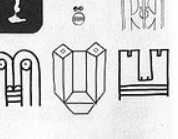

Interactive Mask

Bruno Munariの著書Design as Artに載っているマスクのひとつを元に、インタラクティブに反応するマスクを作りました。人が働きかけるのは、マウスのｘ座標というひとつの値です。それを目の大きさや顔の幅などのさまざまな値と連動させます。
その計算をするのがmap()関数です。例えば、mouseXの値を18－60の間の値に変換し、目の幅として使い、mouseXの値を10－35の間の値に変換し、目の高さに使っています。
eyeW = map(mouseX, 0, width, 18, 60); eyeH = map(mouseX, 0, width, 10, 35);この目の幅と高さは、quad()関数で目のひし形の輪郭を描く時に使われています。(eyeX1, eyeY)が目玉の中心座標。
//左目 ↓左端の点 ↓上端の点 ↓右端の点 ↓下端の点 quad(eyeX1-eyeW/2, eyeY, eyeX1, eyeY-eyeH/2, eyeX1+eyeW/2, eyeY, eyeX1, eyeY+eyeH/2);
【リストFace1】
float eyeD; //目玉の大きさ
float eyeH; //目の高さ
float eyeW; //目の幅
float eyeX1, eyeX2; //目の中央のx座標 固定
float eyeY = 25; //目の中央のy座標 固定
float mX; //口の中央ｘ位置 固定
float mY = 110; //口の中央y位置 固定
float mW = 75; //口の幅 固定
float mUH ; //上口の高さ
float mDH ; //上口の高さ
void setup() {
size(150, 150); // 描画するための画面
noFill();
strokeWeight(2); //円の太さは2ピクセル
stroke(200, 0, 0); //円の線の色は赤
eyeX1 = width/2 - 30; // 左目の中央
eyeX2 = width/2 + 30; // 右目の中央
mX = width/2;
strokeJoin(ROUND); //線と線のつながり部分をラウンドにする
}
void draw() {
background(255);
//mouseXの値を18－60の間の値に変換し、目の幅にする
eyeW = map(mouseX, 0, width, 18, 60);
//mouseXの値を10－35の間の値に変換し、目の高さにする
eyeH = map(mouseX, 0, width, 10, 35);
//mouseXの値を3－30の間の値に変換し、目玉の直径にする
eyeD = map(mouseX, 0, width, 3, 30);
quad(eyeX1-eyeW/2, eyeY, eyeX1, eyeY-eyeH/2, eyeX1+eyeW/2, eyeY,
eyeX1, eyeY+eyeH/2); //左目
quad(eyeX2-eyeW/2, eyeY, eyeX2, eyeY-eyeH/2, eyeX2+eyeW/2,
eyeY, eyeX2, eyeY+eyeH/2); //右目
fill(200, 0, 0);
ellipse(eyeX1, eyeY, eyeD, eyeD); //目玉
ellipse(eyeX2, eyeY, eyeD, eyeD);
noFill();
line(eyeX1+eyeW/2, eyeY,eyeX2-eyeW/2, eyeY);
//mouseXの値を5－10の間の値に変換し、上口の高さにする
mUH = map(mouseX, 0, width, 5, 10);
//mouseXの値を5－30の間の値に変換し、下口の高さにする
mDH = map(mouseX, 0, width, 5, 30);
quad(eyeX1, mY, eyeX1+eyeW/2, mY-mUH, eyeX2-eyeW/2, mY-mUH, eyeX2, mY); //上口
line(eyeX1-eyeW/2, eyeY,eyeX1-eyeW/2,mY-mUH);//左目下の線 左
line(eyeX1, eyeY+eyeH/2, eyeX1, mY); //左目下の線 中央
line(eyeX1+eyeW/2, eyeY,eyeX1+eyeW/2, mY-mUH); //左目下の線 右
line(eyeX2-eyeW/2, eyeY,eyeX2-eyeW/2, mY-mUH); //右目下の線 左
line( eyeX2, eyeY+eyeH/2, eyeX2, mY); //右目下の線 中央
line(eyeX2+eyeW/2, eyeY, eyeX2+eyeW/2, mY-mUH);//右目下の線 右
line(eyeX2, mY, eyeX2+eyeW/2, mY-mUH);//右目下の線 右斜め
line(eyeX1, mY ,eyeX1-eyeW/2,mY-mUH); //左目下の線 左斜め
quad(eyeX1, mY, eyeX2, mY,eyeX2-eyeW/2, mY+mDH, eyeX1+eyeW/2, mY+mDH); //下口
}